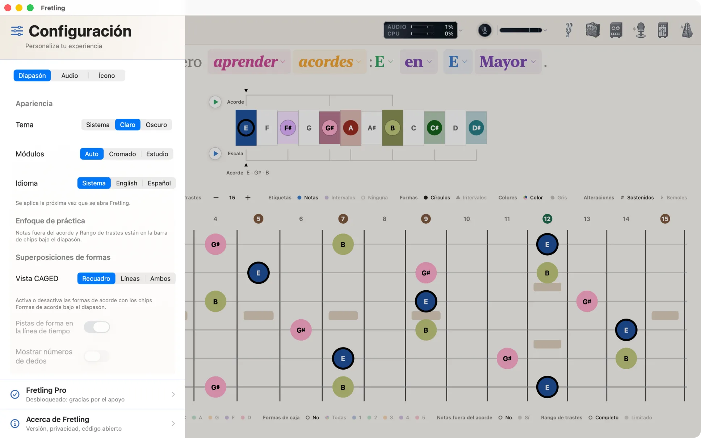
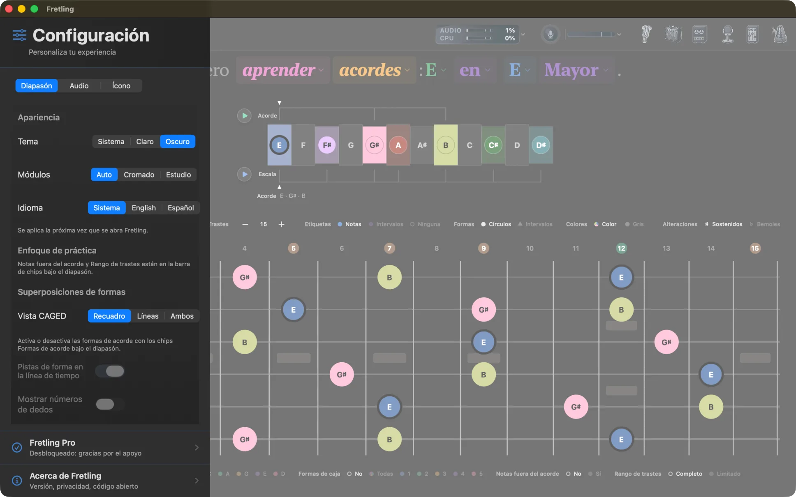
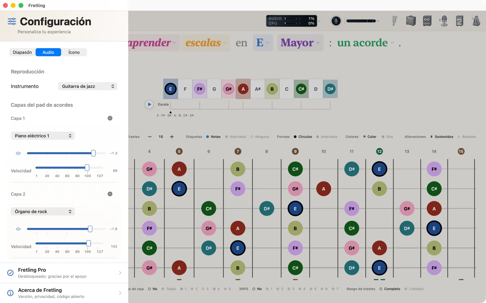
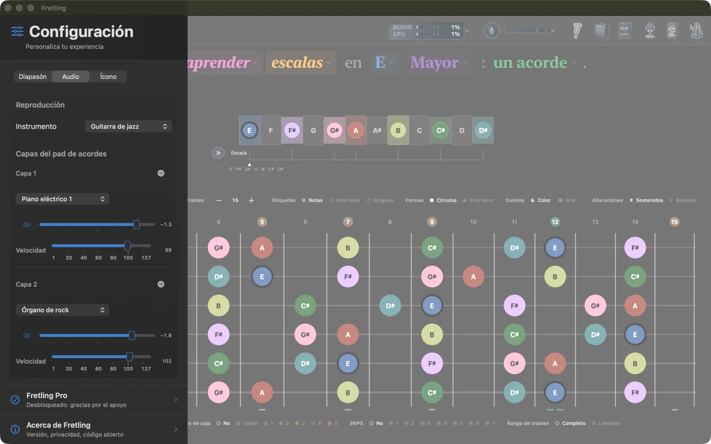
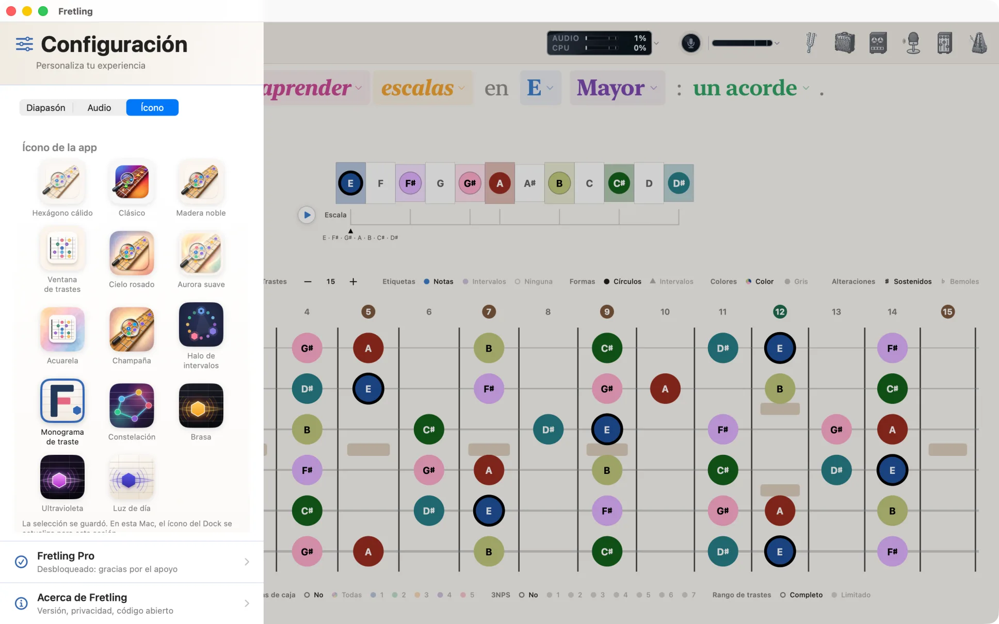
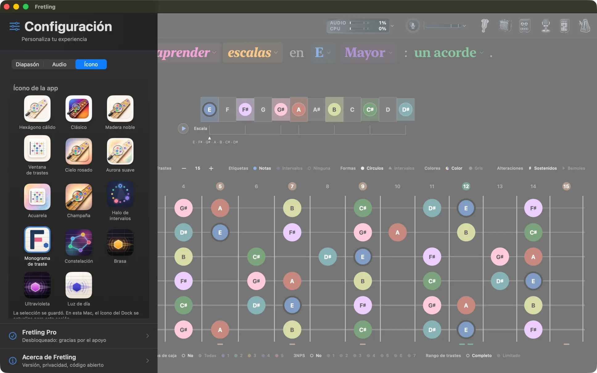
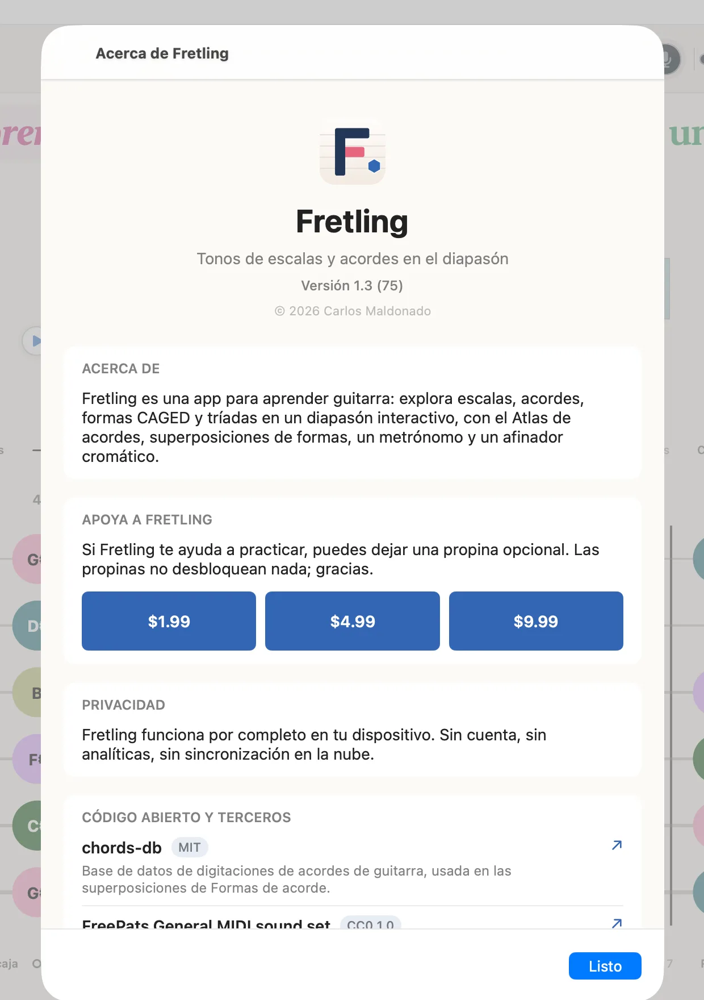
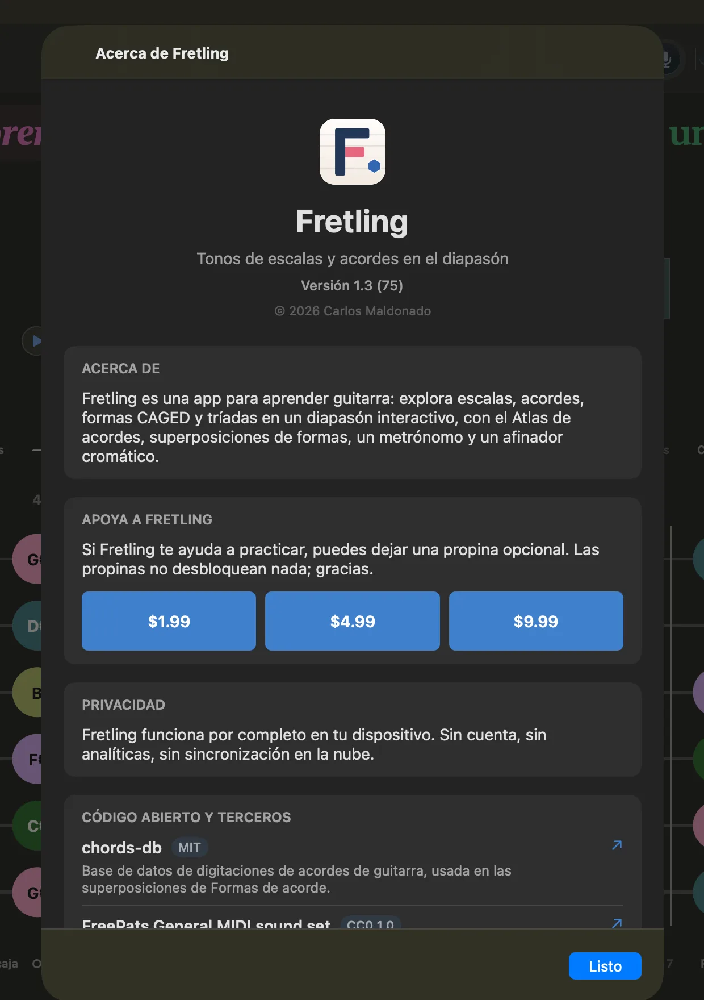

Configuración
La barra lateral de configuración se desliza desde la izquierda y se abre con el botón del extremo izquierdo de la barra superior. Tiene tres pestañas: Diapasón, Audio e Ícono, y un enlace a Acerca de al final.
No todo vive aquí. Los ajustes que cambias constantemente están en las barras de chips que enmarcan el mástil: visualización de marcadores encima, Agrupaciones visuales debajo. La barra lateral guarda lo que ajustas una vez y dejas en paz.
Pestaña Diapasón
Tres grupos, algunos de los cuales aparecen solo en los modos a los que aplican. Las opciones que no aplican en este momento se atenúan en lugar de ocultarse, así que la barra lateral no se reorganiza bajo tus manos.


Apariencia
| Ajuste | Opciones | Descripción |
|---|---|---|
| Tema | Sistema / Claro / Oscuro | Sigue la apariencia del dispositivo, o fija Fretling en claro u oscuro. |
| Módulos | Auto / Cromado / Estudio | Cómo se dibujan las herramientas de práctica flotantes. Auto da al lienzo claro el panel Cromado y al lienzo oscuro el Estudio; fija cualquiera para conservarlo en todas partes. |
| Idioma | Sistema / English / Español | Sigue el idioma del dispositivo, o fija Fretling en inglés o en español. Un cambio se aplica la próxima vez que se abre la app: Fretling ofrece reiniciar de inmediato en Mac (Reiniciar ahora) o salir en iPad (Salir de Fretling), o elige Más tarde y cambia por su cuenta la próxima vez que la abras. |
Los ajustes de marcadores no están aquí: etiquetas, formas, colores y alteraciones viven en la barra de visualización de marcadores sobre el mástil, donde siguen visibles mientras tocas.
Enfoque de práctica
| Ajuste | Opciones | Descripción |
|---|---|---|
| Mostrar líneas de tríadas | Interruptor | Solo en el modo Tríadas. Une cada voicing de la tríada con una línea. |
Notas fuera del acorde y Rango de trastes estaban aquí. Ahora son chips de la barra Agrupaciones visuales bajo el mástil: ambos se cambian en plena práctica y ambos cambian lo que muestra el mástil, así que van junto a él.
Superposiciones de formas
| Ajuste | Opciones | Descripción |
|---|---|---|
| Vista CAGED | Recuadro / Líneas / Ambos | Cómo se dibuja una forma CAGED: contorno de la región, líneas que conectan sus notas, o ambos. |
| Pistas de forma en la línea de tiempo | Interruptor | También marca las notas de la forma en la línea de tiempo. Requiere que las formas de acorde estén activadas. |
| Mostrar números de dedos | Interruptor | Imprime los números de dedos en las formas de acorde. Requiere que las formas de acorde estén activadas. |
| Interacción CAGED | Coexistir / Exclusivo / Reemplazar CAGED | Modo Acordes. Qué pasa cuando las formas de acorde y CAGED están activados a la vez: dibujar ambos, dejar que las formas tomen el control mientras están activas, o que las formas reemplacen a CAGED por completo (lo que también quita los chips CAGED de Agrupaciones visuales). |
Las formas de acorde en sí se activan y desactivan en el grupo Formas de acorde de la barra Agrupaciones visuales bajo el mástil, no aquí: es una superposición que usas a menudo, así que está junto al diapasón que cambia. Las dos filas de arriba la siguen y se atenúan mientras está desactivada.
Todo el grupo Superposiciones de formas se atenúa mientras identificas un acorde: no hay tonalidad contra la cual apoyar una forma.
Pestaña Audio
Reproducción
| Ajuste | Opciones | Descripción |
|---|---|---|
| Instrumento | Piano acústico, Guitarra acústica (nailon), Guitarra acústica (acero), Guitarra de jazz, Guitarra eléctrica limpia, Onda senoidal | La voz que se usa cuando tocas notas en el mástil. Onda senoidal es sintetizada; el resto viene de un SoundFont General MIDI. |
Capas del pad de acordes
Los acordes pueden sonar apilando hasta tres instrumentos, que es cómo consigues un pad detrás de un acorde en lugar de una sola muestra plana. Cada capa tiene su propio instrumento, volumen y silencio; Añadir capa añade una, hasta el máximo.
Las capas aplican a la reproducción de acordes: el chip Acorde junto a la línea de tiempo, las vistas previas del Atlas de acordes y la reproducción de progresiones. Tocar notas sueltas siempre usa el ajuste Instrumento de arriba.


Pestaña Ícono
Fretling incluye catorce íconos de app; elige uno y cambia el ícono de la pantalla de inicio o del Dock. Las opciones son Hexágono cálido, Clásico, Madera noble, Ventana de trastes, Cielo rosado, Aurora suave, Acuarela, Champaña, Halo de intervalos, Monograma de traste, Constelación, Brasa, Ultravioleta e Luz de día. Cada uno se muestra como un mosaico de vista previa antes de que te decidas.


Acerca de y propinas
Al final de la barra lateral, Acerca de Fretling abre una pantalla con la versión y el número de compilación, un resumen de privacidad en lenguaje sencillo y los créditos de los componentes de código abierto sobre los que está hecho Fretling: la base de datos de digitaciones de acordes, el SoundFont usado para la reproducción de instrumentos, la batería grabada detrás del paquete Batería y el motor Neural Amp Modeler con sus dependencias.
La pantalla Acerca de también tiene un bote de propinasopcional. Las propinas son compras dentro de la app comunes gestionadas por Apple, en tres tamaños. No desbloquean nada: cada función está disponible, des propina o no.

